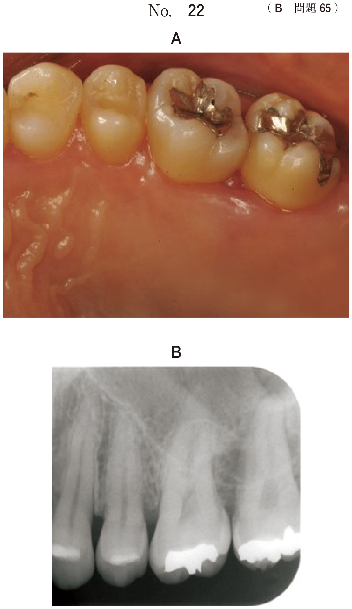
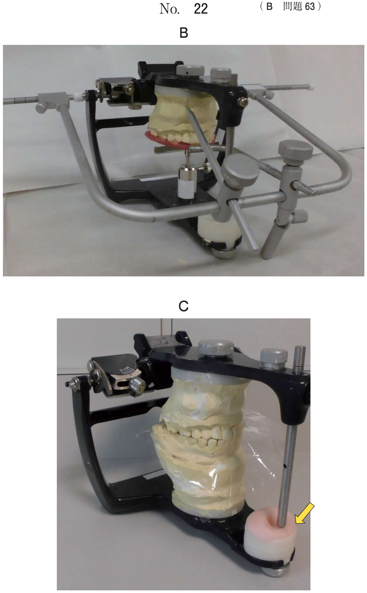

上皮性悪性腫瘍：TNM分類
TNM分類の概念
TNM分類は、原発腫瘍の広がり（T）、所属リンパ節への転移（N）、遠隔転移の有無（M）により腫瘍の病期を表すシステムである。国際対がん連合（UICC）を中心に開発された。
- T：原発腫瘍（primary tumour）の広がり
- N：所属リンパ節（regional lymph nodes）への転移
- M：遠隔転移（distant metastasis）の有無
口腔領域の所属リンパ節は頸部リンパ節である。
T分類（原発腫瘍）― 口腔癌
- 従来の「最大径のみ」から、DOI（depth of invasion：浸潤の深さ）が追加された
- DOIが深いほど、サイズが小さくてもT分類が格上げされる
T分類（UICC 2017 第8版）
| 分類 | 最大径 | DOI（浸潤の深さ） |
|---|---|---|
| TX | 原発腫瘍の評価が不可能 | |
| T0 | 原発腫瘍を認めない | |
| Tis | 上皮内癌 | |
| T1 | ≤2cm | ≤5mm |
| T2 | ≤4cm | ≤10mm |
| T3 | >4cm | >10mm |
| T4a | 隣接構造に浸潤（下記参照） | |
| T4b | 高度進展（下記参照） | |
DOIが深い場合はサイズが小さくてもT分類が上がる（例：最大径1.5cmでもDOI 8mmならT2）。
T4の定義（口腔）
| 分類 | 浸潤範囲 |
|---|---|
| T4a （口唇） | 皮質骨、下歯槽神経、口腔底、皮膚（顎または外鼻）に浸潤 |
| T4a （口腔） | 皮質骨、舌深層の筋肉／外舌筋（オトガイ舌筋、舌骨舌筋、口蓋舌筋、茎突舌筋）、上顎洞、顔面の皮膚に浸潤 |
| T4b | 咀嚼筋間隙、翼状突起、頭蓋底に浸潤、または内頸動脈を全周性に取り囲む |
- 外舌筋（オトガイ舌筋・舌骨舌筋・口蓋舌筋・茎突舌筋）への浸潤 → T4a
- 内舌筋（横舌筋・垂直舌筋・上縦舌筋・下縦舌筋）への浸潤 → T4にならない（舌実質内の筋肉）
- 舌下腺への進展 → 舌の外側構造への浸潤でありT4
N分類（所属リンパ節転移）
N分類（UICC 2017 第8版）
| 分類 | 定義 |
|---|---|
| NX | 所属リンパ節転移の評価が不可能 |
| N0 | 所属リンパ節転移なし |
| N1 | 同側の単発性リンパ節転移で最大径≤3cm、ENE(-) |
| N2a | 同側の単発性リンパ節転移で最大径>3cmかつ≤6cm、ENE(-) |
| N2b | 同側の多発性リンパ節転移で最大径≤6cm、ENE(-) |
| N2c | 両側または対側のリンパ節転移で最大径≤6cm、ENE(-) |
| N3a | 最大径>6cm、ENE(-) |
| N3b | いずれかのリンパ節でENE(+) |
ENE（extranodal extension：節外浸潤）はUICC 2017で追加された評価項目。ENE(+)であれば自動的にN3bとなる。
M分類（遠隔転移）
| 分類 | 定義 | 評価に用いる検査 |
|---|---|---|
| MX | 遠隔転移の評価が不可能 | ― |
| M0 | 遠隔転移なし | CT、PET（FDG-PET/CT） |
| M1 | 遠隔転移あり |
口腔内超音波検査やパノラマエックス線撮影、歯科用コーンビームCTは遠隔転移（M分類）の評価には用いない。
Stage分類
| Stage | T | N | M |
|---|---|---|---|
| 0 | Tis | N0 | M0 |
| I | T1 | N0 | M0 |
| II | T2 | N0 | M0 |
| III | T3 T1〜T3 | N0 N1 | M0 M0 |
| IVA | T4a T1〜T3 | N0〜N2 N2 | M0 M0 |
| IVB | T4b Tに関係なく | Nに関係なく N3 | M0 M0 |
| IVC | Tに関係なく | Nに関係なく | M1 |
- M1があれば問答無用でStage IVC
- T4bまたはN3があればStage IVB
- T1N0M0 = Stage I（頻出）
- N1があればStage III以上（T1-3の場合）
病理組織学的分化度（G分類）
| 分類 | 定義 |
|---|---|
| GX | 分化の程度の評価が不可能 |
| G1 | 高分化 |
| G2 | 中分化 |
| G3 | 低分化 |
| G4 | 未分化 |
過去問
左側頰粘膜前方部に15×10mmの硬結を認め、扁平上皮癌と診断された。頰筋への浸潤はみられない。画像検査で所属リンパ節と他臓器への転移は認めない。 病期はどれか。1つ選べ。
b StageⅠ
c StageⅡ
d StageⅢ
e StageⅣ
【解説】最大径15mm（≤2cm）→ T1。リンパ節転移なし → N0。遠隔転移なし → M0。T1N0M0 = Stage I。頬筋への浸潤がないためT4にはならない。
舌癌のTNM分類（UICC 2002）でT4とする診断根拠はどれか。1つ選べ。
b 舌下腺への進展
c 横舌筋への進展
d 垂直舌筋への進展
e 顎下リンパ節への転移
【解説】T4は隣接構造への浸潤で判定する。舌下腺は舌の外側構造であり、進展すればT4に該当する。横舌筋・垂直舌筋は内舌筋（舌実質内の固有筋）であり、T4の基準とならない。肺への転移はM分類、顎下リンパ節への転移はN分類で評価する。
右側舌縁部に最大径3cmの舌癌を認めた。また同側顎下リンパ節のみに最大径が2cmの転移を1つ認めたが、遠隔転移は認めなかった。 このTNM分類はどれか。1つ選べ。
b T1N1M1
c T2N0M0
d T2N1M0
e T2N1M1
【解説】最大径3cm（>2cm, ≤4cm）→ T2。同側顎下リンパ節に単発の転移で最大径2cm（≤3cm）→ N1。遠隔転移なし → M0。よってT2N1M0。
口腔癌のTNM分類でM分類の評価に用いられるのはどれか。2つ選べ。
b PET
c 口腔内超音波検査
d 歯科用コーンビーム CT
e パノラマエックス線撮影
【解説】M分類（遠隔転移）の評価にはCTとPET（FDG-PET/CT）を用いる。口腔内超音波検査は原発腫瘍の浸潤深さ（DOI）の評価に有用。歯科用コーンビームCTは顎骨への浸潤評価に、パノラマエックス線は顎骨の概観評価に用いるが、いずれも遠隔転移の評価には不適切。
70議の男性。舌の腫脹を主訴として来院した。1か月前に自覚したが、痛みがないためにそのままにしていたという。右側舌縁部に易出血性の腫脹を認める。超音波検査、CT及びFDG-PET/CTで頸部リンパ節転移と遠隔転移を認めなかった。初診時の口腔内写真（別冊No.30A）、造影CT（別冊No.30B）、口腔内超音波検査の画像（別冊No.30C）及び生検時のH-E染色病理組織像（別冊No.30D）を別に示す。 TNM分類（UICC2017）におけるstage分類はどれか。1つ選べ。




b StageⅠ
c StageⅡ
d StageⅢ
e StageⅣa
【解説】UICC 2017に基づく判定。口腔内写真と超音波検査から腫瘍の最大径≤2cm、DOI≤5mmと判断 → T1。頸部リンパ節転移なし → N0。遠隔転移なし → M0。T1N0M0 = Stage I。UICC 2017ではDOIが加味されるが、本例ではいずれの基準でもT1に該当する。
56歳の女性。下顎左側臼歯部の痛みと歯の動揺を主訴として来院した。2か月前から疼痛を自覚し、次第に動揺してきたという。下顎左側臼歯部に42✕20mm大の腫瘤を認め、生検の結果は扁平上皮癌であった。FDG-PET/CTで遠隔転移を認めなかった。初診時の口腔内写真（別冊No.31A）、エックス線画像（別冊No.31B）及びFDG-PET/CT（別冊No.31C）を別に示す。 TNM分類（UICC2017）はどれか。1つ選べ。



b T2N1M1
c T3N2aM1
d T4aN2bM0
e T4bN3aM0
【解説】下顎歯肉の腫瘤42×20mmで歯の動揺あり → 下顎骨（皮質骨）への浸潤を示唆 → T4a。FDG-PET/CTで同側頸部に複数のリンパ節転移を認める → N2b（同側多発性、≤6cm）。遠隔転移なし → M0。よってT4aN2bM0。b, cはM1のため、遠隔転移なしの本例には不適合。